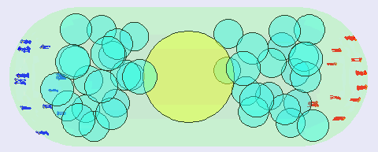
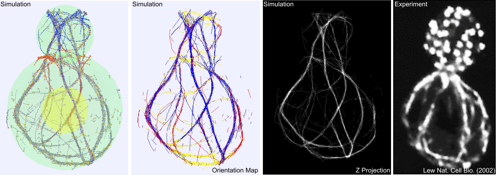

A further list of projects other than described below in details:
http://haosutang.github.io/project_more.html
| |
1. Model of actin dynamics in fission yeast(This is my PhD thesis work advised by Professor Dimitrios Vavylonis at Lehigh University and supported by NIH/NIGMS) Haosu Tang, Damien Laporte, Dimitrios Vavylonis, "Actin cable
distribution and dynamics arising from cross-linking, motor
pulling, and filament turnover", Molecular Biology of the
Cell (2014) link.
Cells are well known as "building blocks" of life. The growth of every living organism on earth relies on the proper growth and division of cells. Malfunction of growth and division will cause irregular cell morphorlogies, reproduction failures, cancers and deaths. Actin, a ubiquitous kind of protein found in all cells, is crucial for such polarized cell growth and division. Actin monomers link to form actin filaments, which are then bundled by crosslinking proteins to form actin cables. These cables serve as tracks for the cell to transport organelles to where they belong, establishing polarized growth. We started out from building a coarse-grained 3D semiflexible polymer model that represents the physical properties of actin filament. We further tested persistence length, relaxation time, equipartition of energy of this computational model. Effects of various actin interacting proteins are then added to the system as potentials that affect actin filaments structure and dynamics. Our model resembles the actin cable features observed in experimental images extremely well. Furthermore, it quantitatively explains actin cables structures in multiple cell mutants and makes testable predictions for future works.  The actin cable work has been presented at the following
conferences: 2. Actin dynamics in budding yeastFurther, we modified the model and extended it to the budding yeast systems. G2 growth phase budding yeast has a calabash shape where the bud grow out of the mother at the budding site. Two types of formins help polymerize actin filament at different rates: one localized at the bud, the other at the neck. Our new model adjusted to this complicated shape and polymerization mechanism. Preliminary snapshots:  The work is currently under preparation for publication. 3. Actin dynamics in droplet We are also interested in building a computational model to
simulate actin network structure and dynamics in confined space.
The simulation below shows actin proteins polymerize from random
positions and become bundled inside a droplet. The size of the
actin network becomes "squeezed" after bundling. Sometimes the
network can form a ring structure under certain conditions. 4. Worm-like chain and semiflexible polymersThe single filament below is simulated as semi-flexible polymers.
The segment length is 0.1 μm and the total filament length is 3
μm. This filament fluctuates under thermal forces with its
persistence length set at 10 μm. I compared the mechanical
properties (such as persistence length) of single filament and
bundle. The description for the filament model can be found in
supplementary material of my MBoC paper. This is a course project
I designed for BioE421 by Professor Anand Jagota. 5. Lennard-Jones particlesA system of particles is simulated here inside the box with
periodic boundary conditions under Lennard-Jones potential.
Velocities are rescaled under given temperature conditions. This
work is advised by Professor Jeetain Mittal as a final project for
CHE 498. 6. Image registration and shape finding I developed a medical image processing application that performs
Gaussian smoothing, thresholding, shape finding and labeling on
medical images. This software can also reconstruct 3D images from
a stack of 2D images and track the movement of patterns. This work
is advised by Professor Xiaolei Huang as a final project for CSE
420. |